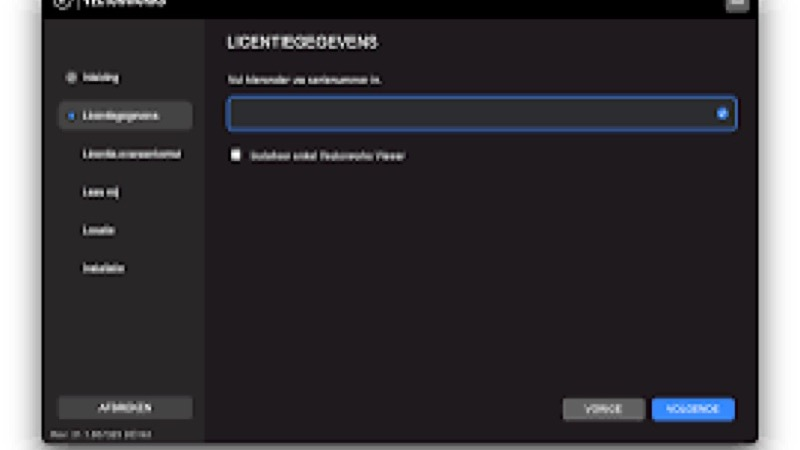
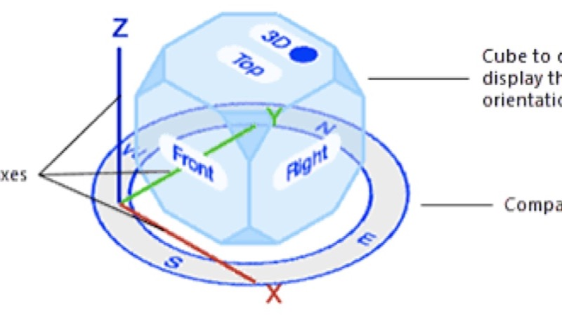
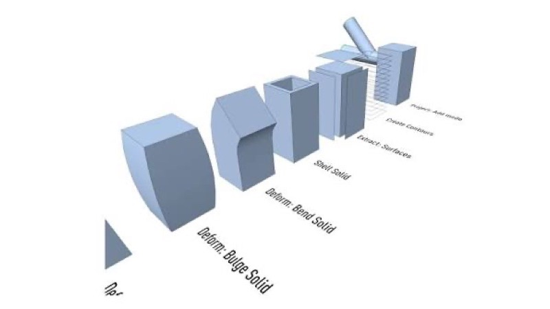
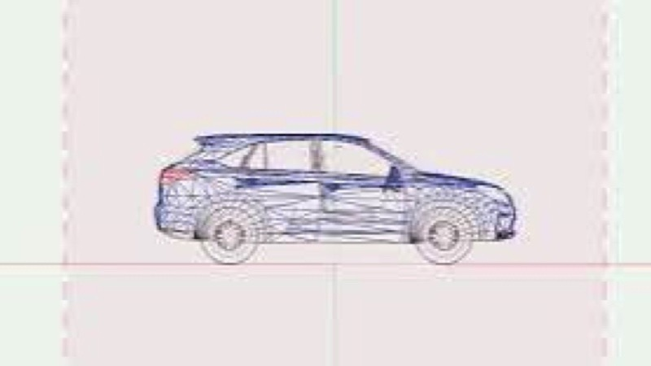

Vectorworks gebruiken
Installeren

Basisnavigatie

Basis modelleren
Solid modeling

Materialen maken en toepassen
Groepen gebruiken

Symbolen gebruiken
Technische tekening op schaal
Exporteren naar Twinmotion